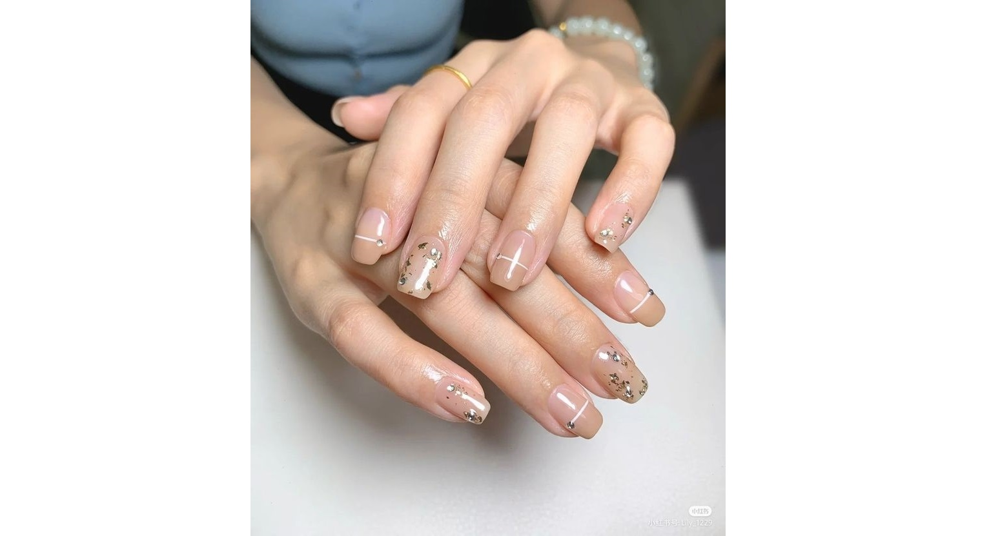

User Experience Design
User Experience Design
for Dashboard App
Nail Art Project Overview
Merancang pengalaman pengguna untuk nail art yang komprehensif bagi para pecinta dan profesional kecantikan kuku. Tujuan utama adalah menciptakan antarmuka yang intuitif, inspiratif, dan mudah dinavigasi, sehingga pengguna dapat dengan mudah menjelajahi desain kuku, mempersonalisasi pilihan mereka, dan merencanakan tampilan yang sesuai dengan gaya pribadi.
Eksplorasi Tren Nail Art
Proses mendalam meliputi:
- Wawancara mendalam dengan 50+ pengguna potensial dari berbagai latar belakang untuk memahami preferensi terhadap hasil akhir nail art
- Analisis kompetitif terhadap 15 brand atau layanan nail art terkemuka untuk mengevaluasi kualitas hasil dan gaya yang ditawarkan
- Sesi observasi pengguna di studio nail art untuk memahami ekspektasi visual, proses pemilihan desain, dan kepuasan terhadap hasil akhir
- Pengujian awal berbagai konsep desain kuku melalui kelompok fokus untuk mengukur daya tarik visual dan kesesuaian dengan gaya pribadi pengguna
Desain Interaktif untuk Dunia Kecantikan Kuku
Pendekatan desain yang komprehensif berfokus pada:
- Antarmuka yang bersih dan estetis untuk menampilkan desain nail art dengan maksimal
- Galeri visual yang memudahkan pengguna mengeksplorasi berbagai hasil akhir nail art secara jelas dan menarik
- Navigasi yang intuitif untuk membantu pengguna menemukan inspirasi, layanan, atau stylist favorit mereka
- Desain yang responsif agar pengalaman menjelajahi desain kuku tetap optimal di berbagai perangkat, dari smartphone hingga tablet
Key Outcomes
Hasil Utama dari Proyek Nail Art:
- Peningkatan eksplorasi desain kuku di aplikasi sebesar 60%
- Penurunan kebingungan pengguna saat memilih desain sebesar 40%
- Peningkatan kepuasan terhadap hasil akhir nail art sebesar 75% berdasarkan survei pengguna
Project Gallery